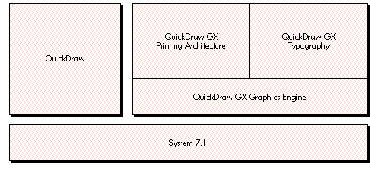
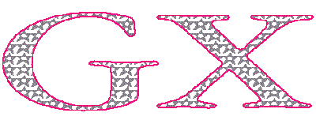

A beta version of QuickDraw GX comes to you on this issue's CD. As you contemplate the
vast scope of it all, you may wonder how you're ever going to get your arms around
this new imaging technology. Not to worry -- this article will get you started. It walks
you through the steps to getting QuickDraw GX up and drawing and presents a simple
"GX-hip" application shell that incorporates the basics for you to experiment with.
QuickDraw GX offers developers a totally new and markedly improved way of imaging
on the Macintosh. Yes, you'll have to learn the new system, but look at what you get:
The API is simpler and the human interface is better. The amount of control your
application can exercise over text and graphics has been greatly increased. Your
application will be able to produce consistent output no matter what the output device.
And extensive support for color is built in throughout the system.
With the beta version of QuickDraw GX in hand, you're no doubt eager to create a
QuickDraw GX application and start drawing. This article covers just about everything
you need to know to get started: initializing QuickDraw GX, using windows, creating and
manipulating QuickDraw GX shapes, printing, and debugging. By way of illustration,
we discuss the QuickDraw GX shell that you'll find on this issue's CD. But before we do
that, let's take a quick look under the hood at the major features of QuickDraw GX and
how it fits into the Macintosh architecture.
QuickDraw GX coexists happily with QuickDraw, thank goodness. It doesn't replace
QuickDraw, but instead "moves in next door," so you still live with a Macintosh
Toolbox based on QuickDraw. You can run QuickDraw-based applications on a
QuickDraw GX system. These applications won't even notice that QuickDraw GX is
installed, but they'll be able to take advantage of some of the QuickDraw GX printing
features, including improved background printing to all devices, desktop printers,
print job queuing, and better type management.
QuickDraw GX has three major pieces: graphics, typography, and printing. You can
visualize the relationship of these three different pieces to each other and to
QuickDraw as shown in Figure 1.

Figure 1 QuickDraw and the Pieces of QuickDraw GX
GRAPHICSThe basic building block of QuickDraw GX graphics is theshape. A shape is
an object that contains, among other things, a geometry of some type and a fill
property that specifies how the geometry should be interpreted when drawn (such as
framed or filled).
There are four basic types of shapes, classified by the nature of the geometry they
contain: geometric shapes, typographic shapes, bitmap shapes, and pictures.
Besides containing a geometry, a shape contains references to three other objects that
describe how it should be rendered. These objects are the style, the transform, and the
ink.
Some of these objects in turn contain references to other objects. For example, a
transform points to a list of view port objects that describe where to draw the
geometry. A view port is like a QuickDraw grafPort in that it defines an area of local
space as a drawing environment. Unlike a grafPort, though, a view port doesn't contain
state information about the drawing environment (pen, color, transfermode, and so
on). A view port contains the mapping used to convert from the view port's local space
to a global space described by aview group. A view port object points in turn to a list
of view device objects, which describe the clip shape, mapping, and bitmap associated
with a physical device such as a monitor.
A shape can also have one or moreattributes, which modify the shape's behavior. These
attributes enable your application to specify how a shape is edited or how QuickDraw
GX stores the shape. For example, if you set the shape attribute
gxMapTransformShape, this tells QuickDraw GX that you want it to manipulate the
transform referenced by the shape, instead of directly manipulating the data contained
within the geometry of the shape.
Figure 2 depicts the shape object and what it references. The owner count is the
number of other objects within the application that reference that object. The tag list
is a list of tag objects, which are simply containers for any data the application
associates with the owning object.
Figure 2 The Shape Object and What It References
TYPOGRAPHY
QuickDraw GX has a sophisticated typographic model that's fully integrated with
graphics. The ability to do kerning, tracking, and justification, as well as ligatures and
ornamental forms of various characters, is provided by the line layout routines,
supported by the QuickDraw GX smart font format. The line layout routines work with
the typographic information contained in the TrueType GX and Type 1 GX fonts to give
you a ton of control over how text is placed on a page.
Because QuickDraw GX typography is fully integrated with graphics, you can rotate,
skew, and change the perspective of typographic shapes the same way you can
geometric shapes. You can use the text shape to draw a line of text with one style. The
glyph shape enables you to draw text in several styles and graphically manipulate each
glyph. The layout shape uses the information contained in a TrueType GX or Type 1 GX
font to automatically kern, justify, and track, and to support ligatures, final forms
(special forms found at the ends of words), and ornamental forms of the various
glyphs contained within the layout shape.
Note that although QuickDraw GX supports all existing Macintosh font formats (Type
1, bitmap, and TrueType), to take full advantage of its extensive line layout
capabilities you must use TrueType GX or Type 1 GX fonts.
PRINTING
QuickDraw GX improves printing for both users and developers. Users get an improved
human interface, and developers get much more control and functionality. From the
application's point of view, QuickDraw GX offers true device independence: you can
send the same data to all supported devices and the output will be rendered
appropriately on each device.
QuickDraw GX introduces three new printing concepts: desktop printers, portable
digital documents, and printing extensions.
Users can createdesktop printerswith the Chooser. These are represented as icons on
the desktop and are full Finder citizens; users can drag and drop print files and
documents to them. Users can also manage the print queue and redirect print files and
documents by dragging them to and from desktop printers, and can share desktop
printers with other users via PrinterShare GX.
A portable digital document(PDD) file contains all the objects required to render a
document on a screen or printer, so you can open, review, and print the file on any
system running QuickDraw GX without the application or fonts used to create the
document. When a PDD file is created, only the glyphs used in the document are saved
along with it; since the document can't very well be edited, the PDD is secure for
transporting fonts. When you print, you can save the print job as a PDD with or
without the fonts required. If you know that the person you're sending the PDD file to
has the fonts you used, you can choose not to save the fonts with the PDD.
Printing extensionsare small standalone pieces of code that modify the behavior of
printing and give users vastly increased control, at a system rather than a program
level, over how a printed page looks. For example, through a printing extension the
user can direct a printer to print "Confidential" diagonally across each page, no matter
what program is doing the printing. The user selects a printing extension from a list
displayed in the expanded Print, By Page Setup, and Document Setup dialogs (which
appear when More Choices is clicked in the regular dialogs).
The API for QuickDraw GX printing gives you easy access to information about the page
size and orientation of a print job and enables you to keep the user from changing these
settings.
QuickDraw GX supports raster, vector, and PostScriptTM devices. The bad news is that
if your system is running QuickDraw GX, you won't be able to use any non-QuickDraw
GX printer drivers. The good news is that because QuickDraw GX provides
system-level support for developing printer drivers, it's a whole lot easier to develop
printer drivers for QuickDraw GX than it is for the old QuickDraw-based printing
architecture -- you can plan on months of development time as opposed to years. And
in many cases you may find that a printing extension, which is easier yet to develop,
will suffice to implement the desired functionality; for more information, see the
article "Developing QuickDraw GX Printing Extensions" later in this issue.
QuickDraw GX offers you some truly useful programming goodies: libraries of handy
high-level routines, extensive error-handling capabilities, and a powerful new
debugging tool called GraphicsBug.
THE QUICKDRAW GX LIBRARIES
As you cruise around the QuickDraw GX folder on this issue's CD, you'll notice a folder
named Libraries. Open it and you'll find libraries of code for many common graphics,
line layout, and printing tasks. These provide sample code that most applications will
need in order to create a QuickDraw GX application. But unlike Macintosh Toolbox code,
this library code can be modified or extended by you to meet your own particular
needs. All the library code is based on core QuickDraw GX calls.
ERROR HANDLING IN QUICKDRAW GX
The goal of QuickDraw GX's error-handling capabilities is to never allow QuickDraw
GX to crash your Macintosh, and to inform you anytime QuickDraw GX can't complete
an operation. QuickDraw GX uses two different models for handling errors: one for
graphics and layout errors and another for printing errors. We'll discuss graphics and
layout errors here. Printing errors are described later in this article, under "Basic
Printing in QuickDraw GX."
There's both a debugging and a nondebugging version of the combined graphics and
layout portions of QuickDraw GX. The debugging version provides extensive
error-handling capabilities to help you debug your applications under development.
The nondebugging version is lean and mean; it has fewer error-handling capabilities
and is faster than the debugging version. You can differentiate between the two
versions by their sizes and version strings: the nondebugging version is smaller, and
the version string for the debugging version has the word "debug" in it. When you're
developing your QuickDraw GX application, you should be using the debugging version.
In the debugging version, information about internal data and drawing problems comes
in three flavors: notices, warnings, and errors. Only a few selected errors and
warnings are issued in the nondebugging version.
Notices. A notice informs you that the operation you're performing isn't really
needed. Notices aren't necessarily bad things; they're just information to help you
improve the efficiency of your application. For example, if you've already colored a
shape and you try to color it again, you'll receive the following notice in the installed
debugger:
GRAPHICS NOTICE: color already set
Warnings. A warning informs you that QuickDraw GX doesn't allow the operation
you're trying to perform. While this might not cause any problems, you also might not
get the result you expected. For example, if you try to use a font that isn't available,
QuickDraw GX will substitute the default font and give you the following warning:
GRAPHICS WARNING: font substitution took place
Errors. An error means that QuickDraw GX couldn't draw your shape or complete a
routine. For example, if you try to draw an empty shape or one that hasn't been
defined, you'll receive the following error:
GRAPHICS ERROR: shape is nil
Checking for drawing errors. Once you've finished developing your application,
you'll still want to be able to check for drawing errors. The QuickDraw GX routine
GXGetShapeDrawError lets you do this and, in case of an error, fail in a graceful
manner. For example, this code fragment checks that drawing was successful and fails
if it wasn't:
GXDrawShape(gthePage);
if (drawingError = GXGetShapeDrawError(gthePage) != noDrawError)
// Your error-handling code here!
Ignoring notices and warnings. Sometimes you might want to ignore a particular
notice or warning because you know what you're doing. Use these routines to ignore a
notice or warning:
void GXIgnoreGraphicsNotice(gxGraphicsNotice notice);
void GXIgnoreGraphicsWarning(gxGraphicsWarning warning);
For example, if you wanted to ignore a notice about recoloring a shape, you would make
this call:
void GXIgnoreGraphicsNotice(color_already_set);
When you call GXIgnoreGraphicsNotice or GXIgnoreGraphicsWarning, the notice or
warning is added to the top of the notice stack or warning stack, respectively. (It's
added to the stack even when not ignored, but the stack handling is taken care of behind
the scenes for you in that case.) So you must balance this with a call to one of the
following routines to ensure that you don't overflow the notice or warning stack:
void GXPopGraphicsNotice(void);
void GXPopGraphicsWarning(void);
In the nondebugging version, where notices and most warnings aren't available, calling
the GXIgnoreGraphicsXXX and GXPopGraphicsXXX routines still results in a trap call
and dispatch even though they just return immediately. There may be a small
performance penalty for this, so you should remember to remove the unnecessary
calls for a shipping application.
Grabbing errors, notices, and warnings. In the nondebugging version, you
receive only a few selected errors and warnings. If you've tested your application
thoroughly, these should be the only errors you see:
out_of_memory
not_enough_memory_for_graphics_client_heap
graphics_client_memory_too_small
could_not_create_backing_store
These should be the only warnings you see:
<>_substitution_occurred
<
<
You probably don't want your user to end up in a debugger or with a system bomb, so
you should catch errors by calling the GXGetGraphicsError routine; you can then
handle the error appropriately within your application or present it to the user.
gxGraphicsError GXGetGraphicsError(gxGraphicsError *stickyError);
You can also grab notices (in the debugging version only) and warnings with these
calls:
gxGraphicsNotice GXGetGraphicsNotice(gxGraphicsNotice *stickyNotice);
gxGraphicsWarning GXGetGraphicsWarning(gxGraphicsWarning
*stickyWarning);
GRAPHICSBUG: A POWERFUL NEW DEBUGGING TOOL
The only way to create and modify shapes in QuickDraw GX is through the public API;
you can't operate on any data directly. This is a very good thing because it lets Apple
expand the system in the future with minimal compatibility risk. But if you can't see
the data you're working with, won't debugging be a nightmare? Here's where
GraphicsBug comes to the rescue. GraphicsBug is an application that enables you to
inspect the contents of any QuickDraw GX graphics or layout object to make sure it
contains the correct information. The command set is very similar to that of MacsBug;
just type "?" to get a list of the commands available. GraphicsBug works only in the
debugging version of QuickDraw GX 1.0b1 but in both versions of later QuickDraw GX
releases.
Now that we've checked out the horsepower under the hood and the amenities built in
for programmers, we're ready to get QuickDraw GX up and drawing. The first step is to
initialize QuickDraw GX, but before you do, you need to make sure the user has
installed it. Use the Gestalt selector 'grfx' to determine whether the graphics and
typography portions of QuickDraw GX have been installed, and the Gestalt selector
'pmgr' to determine whether QuickDraw GX printing has been installed.
In the case of our QuickDraw GX shell, the following routine finds out which parts of
QuickDraw GX have been installed:
Boolean QuickDrawGXAvailable()
{
long theFeatureInQuestion;
if (Gestalt('grfx', &theFeatureInQuestion) == noErr)
{
if (Gestalt('pmgr', &theFeatureInQuestion) == noErr)
gQDGXPrintingInstalled = true;
return (true);
}
return (false);
}
The QuickDraw GX shell uses the global variable gQDGXPrintingInstalled to determine
if QuickDraw GX printing has been installed. If it has, the printing menu items in the
File menu are enabled. Otherwise, an alert tells the user that QuickDraw GX printing
hasn't been installed, and the application works without printing.
Once you know that the user has QuickDraw GX, you're ready to initialize it. After the
generic Macintosh Toolbox initialization, you create a new graphics client to allocate
memory. Then you can set up error handling and validation as an aid to tracking down
problems, although if you're eager to get on with drawing, you don't have to do this
right now. Finally, you can initialize the common color library to get quick and easy
color. In the QuickDraw GX shell, the routine QuickDrawGXInit does all of this
initialization.
CREATING A NEW GRAPHICS CLIENT
A graphics client is a reference to the block of MultiFinder memory used by
QuickDraw GX graphics and layout called theQuickDraw GX heap. When your
application creates a new graphics client, QuickDraw GX usually allocates this block of
memory. The QuickDraw GX heap contains all the graphics and layout objects your
application creates while running QuickDraw GX, as well as a few objects QuickDraw
GX uses to manage the heap. (See "Managing Memory in the QuickDraw GX Heap" for
more details.)
The simplest way to create a graphics client is to call EnterGraphics, which defines a
client for you based on some fundamental assumptions. If you want to have more
control over the graphics client you create, call GXNewGraphicsClient:
gGraphicsClient = GXNewGraphicsClient(nil,
gGraphicsHeapSize * 1024, 0L);
The variable gGraphicsClient holds the new graphics client. You can use this variable
anytime you need to access this graphics client. In our shell, we only need this
variable when the application shuts down. The first parameter tells the Memory
Manager where we want to create the QuickDraw GXheap. A nil value tells the Memory
Manager to create the heap within MultiFinder memory. That's usually where you want
it, but you can also specify a pointer to a block of memory in your application heap or
even the system heap. The second parameter defines the size of the heap in bytes. Our
shell uses a 115K heap (gGraphicsHeapSize = 115); if you pass 0, you get the default
heap size of 600K. The last parameter, named separateStack, tells QuickDraw GX to
allocate a stack for the graphics client, which is necessary if that client is going to run
at interrupt time. To get a separate stack, just pass any nonzero value that defines the
stack size.
SETTING UP ERROR HANDLING AND VALIDATION
After setting up the graphics client, you should enable the error, warning, and notice
capabilities if you want to make debugging easier for yourself down the line. In our
QuickDraw GX shell we enable all three with the routines SetGraphicsLibraryErrors
(which enables errors and warnings) and SetGraphicsLibraryNotices (which enables
notices).
The debugging version of QuickDraw GX graphics and layout provides extensive
validation facilities that let you determine whether you're passing valid data to the
QuickDraw GX API and whether anything's gone awry internally. (See "Tracking Down
a Memory Trashing Problem" for details on how to use validation to find out how
damage is being caused in the QuickDraw GX heap.) In general, you should always run
with gxPublicValidation + gxTypeValidation while you're developing a QuickDraw GX
application. To set this level of validation, make this call:
GXSetValidation(gxPublicValidation + gxTypeValidation);
This setting ensures that for all calls, QuickDraw GX checks the routines on entry and
makes sure that the types are correct. For example, if you call GXDrawShape with this
validation setting, QuickDraw GX makes sure that the shape being passed in is a valid
shape and that it's an object of the correct type. This will result in a slight decrease in
performance but will help you catch bad data earlier.
Your application can validate various QuickDraw GX graphics and layout objects --
shape, style, transform, ink, view port, view device, view group, color profile, color
set, tag, or graphics client, or any combination -- with a GXValidate call before
they're passed to a routine. For example, if you wanted to validate the inks in the heap,
you would make the following call:
GXValidateInk(gxInk);
If you're interested in using only these validation calls, set the validation level to
gxPublicValidation.
SETTING UP THE COMMON COLOR LIBRARY
The common color library provided by QuickDraw GX gives you a quick way to color
the shapes you create. This library contains 103 common colors, including maroon,
teal, fluorescent blue, apple green, Mars orange, and Venetian red. To initialize this
library, make this call:
InitCommonColors();
With the color library set up, you can call SetShapeCommonColor to color a shape.
We'll do this later with the shapes we draw in the QuickDraw GX shell window.
Now that you've initialized QuickDraw GX, you need to set it up to work within a
window. The first step is to create a view port and attach it to a window. Then you need
to provide routines to zoom and resize the view port and to scroll its contents.
Recall that QuickDraw GX draws all shapes in a view port, which contains the mapping
used to convert from the view port's local space to the global space (described by a
view group). The view group determines whether the contents of the view port are
drawn on the screen in a window or to an off-screen area. A view port also contains its
clip shape, describing the area in which drawing can take place.
ATTACHING A VIEW PORT TO A WINDOW
By attaching a view port to a window, you guarantee that all the shapes you draw to the
view port will be drawn in the correct location even after the user moves the window.
You attach a view port to your window with this call:
gxViewPort windowParentViewPort;
windowParentViewPort = GXNewWindowViewPort(theWindow);
If all goes well, windowParentViewPort contains a reference to the view port attached
to the window (the parent view port). You can't change the clip shape or mapping of
this particular view port, because QuickDraw GX automatically maintains all the
characteristics of the parent view port. This is a problem if you don't want your scroll
bars to be overwritten. However, you can attach a view port to the parent view port
(see Figure 3) and then adjust this newest view port (the child view port) to reflect
changes due to scrolling or resizing the window.
Figure 3 The View Port Hierarchy
Defining the new view port's bounds. Before we create a new view port we need
to determine its bounds. We can find the bounds of the window by converting the
window's QuickDraw portRect into a fixed-point QuickDraw GX rectangle. The
following utility routine does this.
void GetFixedWindowBounds(WindowPtr myWindow,
gxRectangle *boundingBoxPtr)
{
GrafPtr oldPort;
Rect qdBounds;
gxRectangle gxBounds;
GetPort(&oldPort);
SetPort(myWindow);
qdBounds = myWindow->portRect;
// Convert the QuickDraw rectangle into a GX fixed-point
// rectangle.
GXQDGlobalToFixedLocal((Point *) &qdBounds.top,
(gxPoint *) &gxBounds.left);
GXQDGlobalToFixedLocal((Point *) &qdBounds.bottom,
(gxPoint *) &gxBounds.right);
*boundingBoxPtr = gxBounds;
SetPort(oldPort);
}
Now we can create a QuickDraw GX rectangle that represents the portRect of the
window. The rectangle will reside in the variable viewRect.
GetFixedWindowBounds(theWindow, &viewRect);
We need to adjust viewRect for the scroll bars attached to the window.
viewRect.right -= ff(kScrollBarWidth - 1);
viewRect.bottom -= ff(kScrollBarWidth - 1);
Creating and activating the child view port. Now we're ready to create a child
view port that's attached to the parent view port. We want to create a new view port
within the same view group (that is, sharing the same global space) as the window's
view port:
gxViewPort gcontentViewPort;
gcontentViewPort =
GXNewViewPort(GXGetViewPortViewGroup(windowParentViewPort));
The gcontentViewPort variable now contains a valid view port that we can work with.
Now we're ready to set the clip shape of this view port. The clip shape can be any
geometry-based shape like a rectangle, a polygon, or a path. The clip shape for
gcontentViewPort will simply be defined by the rectangle contained in viewRect, which
is the portRect of the window, minus the scroll bar areas. After we set the clip shape,
we dispose of the shape because it's no longer needed, thereby freeing up space within
the QuickDraw GX heap:
gxRectangle contentViewPortShape;
contentViewPortShape = GXNewRectangle(&viewRect);
GXSetViewPortClip(gcontentViewPort, contentViewPortShape);
GXDisposeShape(contentViewPortShape);
Next, we need to set the mapping of gcontentViewPort to be the default mapping and
attach gcontentViewPort to the parent view port:
GXSetViewPortMapping(gcontentViewPort, nil);
GXSetViewPortParent(gcontentViewPort, windowParentViewPort);
Now we need to tell QuickDraw GX which view port we want the shapes to be drawn in.
We could have all shapes drawn to both view ports, but that wouldn't be especially
efficient. So we make the following call, which tells QuickDraw GX to draw all the
shapes we make from now on in gcontentViewPort:
SetDefaultViewPort(gcontentViewPort);
ZOOMING AND RESIZING THE CHILD VIEW PORT
Anytime the user zooms or resizes the window, we must update the clip shape of the
child view port we attached to the window's parent view port. To do this, we get the
portRect of the window in a fixed-point rectangle, adjust it for the scroll bars, create
a new clip shape from this rectangle, and reset the clip shape of the view port to this
new clip shape. The following routine does the work:
void ResetContentViewPortClip(WindowPtr theWindow)
{
gxRectangle viewRect;
gxShape contentViewPortClipShape;
// Get the window's portRect into the fixed-point viewRect.
GetFixedWindowBounds(theWindow, &viewRect);
// Adjust the viewRect to accommodate the scroll bars.
viewRect.right -= ff(kScrollBarWidth - 1);
viewRect.bottom -= ff(kScrollBarWidth - 1);
// Create and set the new clip shape.
contentViewPortClipShape = GXNewRectangle(&viewRect);
GXSetViewPortClip(gcontentViewPort, contentViewPortClipShape);
GXDisposeShape(contentViewPortClipShape);
}
SCROLLING THE CHILD VIEW PORT'S CONTENTS
When the user scrolls in the window, we need to reset the mapping of the child view
port before we call ScrollRect to scroll the bits in the window. That will ensure that
when we redraw the contents of the window on the next update event, all the shapes
will be located in the correct window-relative position. Otherwise they would be
redrawn in their old position, because the geometry of the shapes -- which includes
their position in the view port -- doesn't change.
This remapping approach gives us an advantage at print time. If we didn't adjust the
mapping of the child view port, we would need to adjust the mapping of each shape.
While it's possible to do that, we would have to do it again at print time to ensure that
the shapes printed on the right page. If the page contained a lot of shapes, that could be
a very time-consuming operation.
To update the mapping of gcontentViewPort (the child view port) to reflect the
scrolling of the window, we get its current mapping, adjust it to translate the view
port by the scroll amount, and set the mapping to the changed one.
gxMapping viewPortMapping;
GXGetViewPortMapping(gcontentViewPort, &viewPortMapping);
GXMoveMapping(&viewPortMapping, ff(hScroll), ff(vScroll));
GXSetViewPortMapping(gcontentViewPort, &viewPortMapping);
At this point, you've learned how to initialize QuickDraw GX and deal with view ports.
It's finally time to talk about creating, manipulating, and drawing shapes.
A shape contains all the information required to draw it. To create a shape with
QuickDraw GX, you simply define its geometry. Then you can draw it by calling
GXDrawShape(myShape). If you haven't specified otherwise, your shape will use the
default style, transform, and ink supplied by QuickDraw GX for the particular type of
shape. When you change a shape's style, transform, or ink, QuickDraw GX copies a
reference to the new style, transform, or ink into your shape.
To illustrate the process of creating, manipulating, and drawing shapes, in our
QuickDraw GX shell we'll create a typographic shape containing text. We'll outline the
text in some color and fill the inside of each letter with a pattern composed of stars.
Then we'll create a typographic shape containing a line layout of some text, which we'll
render in a combination of different fonts and scripts.
In the QuickDraw GX shell we'll use a picture, which we'll store in the global variable
gthePage, to collect all the shapes we draw to the window. Using a picture enables us to
make just one call to GXDrawShape to draw the contents of the window. We also need to
set the gxUniqueItemsShape shape attribute so that each time we add a shape to the
picture, QuickDraw GX will make a copy of the shape and add the copy, rather than just
adding a reference to the shape. These calls create our picture and set the shape
attribute:
gxShape gthePage
gthePage = GXNewShape(gxPictureType);
GXSetShapeAttributes(gthePage, gxUniqueItemsShape);
The variable gthePage now holds an empty picture, ready to have shapes added to it.
EXAMPLE 1: A SHAPE CONTAINING TEXT
First we'll create a shape containing text, which we'll store in the variable
tempTextShape. We want the text to read "GX." We set the text shape's position, create
the new shape, set the text size, and set the font to New York:
gxPoint textPosition = {ff(10), ff(205)};
gxShape tempTextShape;
tempTextShape = GXNewText (2, (unsigned char *) "GX", &textPosition);
GXSetShapeTextSize(tempTextShape, ff(250));
// This next call comes from the Font Library.
SetShapeCommonFont(tempTextShape, newyorkFont);
The variable tempTextShape now holds the text shape.
Outlining the text. We said that we want to outline the text with some color and fill
the text shape with stars. The approach we'll take to outlining our text shape is to first
convert it into a path shape, which requires only the GXSetShapeType call.
After the conversion to a path shape, each character in the text shape becomes a path.
Thus, the converted shape will contain two different paths, one for each character. To
draw the outline of each path, we set the fill type to gxClosedFrameFill. Then we set the
pen to draw on the outside of each contour, set the pen thickness, set the color of our
path to a color from the common color library, and scale it 125% on the x-axis and
65% on the y-axis so that it will come out looking short and fat.
GXSetShapeType(tempTextShape, gxPathType);
GXSetShapeFill(tempTextShape, gxClosedFrameFill);
GXSetShapeStyleAttributes(tempTextShape, gxOutsideFrameStyle);
GXSetShapePen(tempTextShape, ff(3));
SetShapeCommonColor(tempTextShape, blue);
GXScaleShape(tempTextShape, fl(1.25), fl(0.65), 0, 0);
Now we add our path shape to the picture we've stored in gthePage:
GXSetPictureParts(gthePage, 0, 0, 1, &tempTextShape, nil, nil, nil);
From now on, whenever we draw gthePage, our path shape stored in tempTextShape
will be drawn as well. (See Figure 4.)
Figure 4 The Path Shape Outlining Our Text
Filling with stars. To fill our shape with stars, we start by changing the fill type
and color of our path. Then we define the star shape and the pattern record that will
replace the style of our shape, add our new patterned path to our picture, and dispose
of all the unneeded shapes.
We need to change the fill type of tempTextShape to solid fill because at this point we
want to fill the contents rather than draw the outline of each path. We also want our
stars to be gray, so we need to reset the color.
GXSetShapeFill(tempTextShape, gxSolidFill);
SetShapeCommonColor(tempTextShape, cold_grey);
We define the star as a polygon shape containing one contour and five points, with the
default fill of evenOdd (which results in a star with a hollow pentagon inside), and we
scale it by 15% to make it tiny:
gxShape starShape;
long starGeometry[] = {1, // One contour.
5, // Five points defining the polygon.
ff(60), 0, ff(90), ff(90), 0, ff(30),
ff(120), ff(30), 0, ff(90)};
starShape = GXNewPolygons((gxPolygons *) starGeometry);
GXScaleShape(starShape, fl(0.15), fl(0.15), 0, 0);
The pattern record contains the shape to be used as the pattern, two vectors (u and v)
that describe how to tile the pattern, and the pattern attribute. (See Figure 5.) We'll
attach this record to the style of our path shape, replacing the default style.
Figure 5 Making the Star Pattern
The bounding box of our star shape will be a fixed-point rectangle contained in the
variable starShapeBounds. This information is used to define the u and v vectors of our
pattern record.
gxRectangle starShapeBounds;
GXGetShapeBounds(starShape, 0L, &starShapeBounds);
We define u and v to place the stars side by side without overlapping:
gxPatternRecord starPattern;
starPattern.u.x = 0;
starPattern.u.y = starShapeBounds.bottom;
starPattern.v.x = starShapeBounds.right + fix1;
starPattern.v.y = 0;
We set the attributes of the pattern record to gxNoAttributes and then add our star
polygon shape to the pattern record:
starPattern.attributes = gxNoAttributes;
starPattern.pattern = starShape;
Finally, we add the starPattern to tempTextShape. QuickDraw GX copies a new style to
the converted tempTextShape with the pattern record, replacing the default style
currently referenced by tempTextShape. Anytime this shape is drawn, it will be drawn
patterned with stars. We add our updated tempTextShape to the picture stored in the
variable gthePage:
GXSetShapePattern(tempTextShape, &starPattern);
GXSetPictureParts(gthePage, 0, 0, 1, &tempTextShape, nil, nil, nil);
Now we can dispose of our star polygon shape because it's contained in our pattern
record, which has been encapsulated into the style of our shape. We also dispose of
tempTextShape because there's now a unique reference to it in our picture.
GXDisposeShape(starShape);
GXDisposeShape(tempTextShape);
The results. Our picture, gthePage, now contains two shapes. The first shape is a
colored path that outlines the text "GX." The second shape is the same path filled with
gray stars. When we call GXDrawShape(gthePage), all the shapes contained in our
picture are drawn. The results are shown in Figure 6.

Figure 6 Our Text Outlined With Color and Filled With Stars
EXAMPLE 2: A SHAPE CONTAINING A LINE LAYOUT
In a text shape, all the text can be rendered in only one font and size. In a layout shape,
on the other hand, the text can be rendered in a combination of different fonts and sizes
by applying multiple style runs. A layout shape can contain as many style runs as you
like. A style controls the font, the size, the script (such as Roman or Arabic), run
features (which pertain to swashes, ligatures, and final forms available with the
specified font), justification overrides, and kerning adjustments.
To illustrate QuickDraw GX's line layout features, we'll create a layout shape
containing the text "Catch the Nasty WAVE, Dude." We'll start by creating the styles to
be applied in three different style runs, and then we'll define the layout shape. Finally,
we'll make the whole line of text slant backward, to demonstrate that you can perform
any graphical operation on typographic shapes in QuickDraw GX.
Creating the styles. We're going to apply styles to our layout shape in three
different runs. The first run of text, "Catch the Nasty," will use the Hoefler Italic font;
the second run, "WAVE," will use the Times Roman font; and the third run, "Dude,"
will use Hoefler Italic again. In the first and third runs, we'll enable a total of three of
the run features available with Hoefler Italic. But before we create the styles, we need
to initialize the run controls used to regulate the run features. We specify the number
of run features and styles we'll use.
gxRunControls runControls;
gxRunFeature runFeatures[3];
gxStyle styles[3];
InitializeRunControls(&runControls);
Here's how we specify the style used for our first text run:
styles[0] = NewLayoutStyle((char *)"\pHoefler Italic", ff(36), 0,
&runControls, nil, 0, nil);
We want to enable two run features in our first text run: an "as" ligature in "Nasty"
and swashes on the "C" and "N."
runFeatures[0].featureType = gxLigatureType;
runFeatures[0].featureSelector = gxLigatureRareOnSelector;
runFeatures[1].featureType = gxAlternateDesignsType;
runFeatures[1].featureSelector =
gxAlternateDesignsChanceryOnSelector;
Now we add the two run features to the style used by this run of text:
GXSetStyleRunFeatures(styles[0], 2, runFeatures);
We create the styles for the second and third text runs:
styles[1] = NewLayoutStyle((char *)"\pTimes Roman", ff(38), 0,
&runControls, nil, 0, nil);
styles[2] = NewLayoutStyle((char *)"\pHoefler Italic", ff(40), 0,
&runControls, nil, 0, nil);
The run feature used by the last run of text will enable the final form of the "e" in
"Dude" and will update the style:
runFeatures[2].featureType = gxSmartSwashType;
runFeatures[2].featureSelector = gxSmartSwashLineFinalsOnSelector;
GXSetStyleRunFeatures(styles[2], 3, runFeatures);
We'll also get the swash on "D" in "Dude" because we enabled the swash capabilities in
the second run feature. When we call GXSetStyleRunFeatures, we tell QuickDraw GX
line layout to use all three entries in the array.
Defining the layout shape. We need to define the length of our layout (in bytes)
and initialize the lengths array used to tell QuickDraw GX line layout the length of each
run of text:
short totalLengthOfLayout, lengthsArray[3];
lengthsArray[0] = 15; lengthsArray[1] = 6; lengthsArray[2] = 5;
totalLengthOfLayout = 26;
We now have all the information required to define our layout shape and add it to our
picture stored in the variable gthePage. Our layout shape will contain three runs of
text using three different styles. Each style will use a different text size. Two
different fonts will be used, and three run features will be enabled. The definition
looks like this:
char *sampleText = "Catch the Nasty WAVE, Dude";
gxPoint layoutPosition = {ff(10), ff(65)};
tempLayoutShape = GXNewLayout(1, &totalLengthOfLayout,
(void *) &sampleText, 3, lengthsArray, styles, 0, nil, nil,
nil, &layoutPosition);
GXSetPictureParts(gthePage, 0, 0, 1, &tempLayoutShape, nil,
nil, nil);
We draw tempLayoutShape by calling GXDrawShape(tempLayoutShape). The result is
shown in Figure 7. Note that "WAVE" has been kerned automatically.
Figure 7 Our Line Layout Shape
Skewing the shape and cleaning up. Because QuickDraw GX treats all
typographic shapes as graphics, we can perform any graphical operation on our layout
shape, now stored in tempLayoutShape. We'll skew it by 125% in the x direction about
its origin, move the shape 15 pixels in the x direction to put it back into the window
after the skew, and move it 75 pixels in the y direction to move it away from the
beginning position. Finally, we'll add the shape to our picture stored in the variable
gthePage. When drawn, it will look like Figure 8.
GXSkewShape(tempLayoutShape, fl(1.25), 0, shapePosition.x,
shapePosition.y);
GXMoveShape(tempLayoutShape, ff(15), ff(75));
GXSetPictureParts(gthePage, 0, 0, 1, &tempLayoutShape, nil, nil,
nil);
Figure 8 Our Line Layout Shape, Skewed
We no longer need tempLayoutShape because it's now part of our picture, so we can
dispose of tempLayoutShape and our array of styles:
short loop;
GXDisposeShape(tempLayoutShape);
for (loop = 0; loop <= 2; loop++)
GXDisposeStyle(styles[loop]);
Now gthePage contains three shapes. The first shape is a colored path that outlines the
text "GX," the second shape is the same path filled with stars, and the third shape is a
typographically cool and skewed rendition of "Catch the Nasty WAVE, Dude." When we
call GXDrawShape(gthePage), all these shapes are drawn. In the QuickDraw GX shell,
gthePage is set up in the CreateThePageOfGXShapes function.
QuickDraw GX adds quite a few new printing features, as mentioned earlier in this
article. We'll briefly explore printing here by discussing methods for printing
shapes, how to initialize QuickDraw GX printing, how to handle printing errors, how
to implement three new print items added to the File menu, and how to finish up
printing.
METHODS FOR PRINTING SHAPES
Three approaches to printing shapes are available to your application: you can send
shapes to QuickDraw GX printing one by one, you can send a picture that contains all
the shapes used to represent a page, or you can send a picture that contains other
pictures.
Depending on your application, sending an entire picture full of information may be
simplest, but if the picture contains quite a few shapes, say 20,000 to 25,000, you
might suffer a performance penalty. On the other hand, sending shapes one by one is
more complicated for some applications, but it may be the most efficient in terms of
performance when you have lots of shapes -- more than 20,000. If you have lots of
shapes in one big picture but you don't want to send them one by one, you should
consider breaking the big picture into smaller pictures. (Recall that a QuickDraw GX
picture is a shape that can contain other pictures.) This approach would enable you to
group similar items in the same way as in MacDraw®.
You need to decide which method works best for your application. In the case of our
shell, we'll send a picture for each page of our document (which conveniently consists
of only one page).
INITIALIZING QUICKDRAW GX PRINTING
To initialize QuickDraw GX printing, we call InitPrinting after we create the graphics
client. We then create a job, which is an extensible data structure containing all the
information required to print a document. For example, a job specifies the formatting
printer driver, the printer for which the job has been targeted, when the document
should be printed, and the number of pages in the document.
OSErr myQDGXPrintError;
gxJob gDocumentJob;
myQDGXPrintError = GXInitPrinting();
if (myQDGXPrintError == noErr)
myQDGXPrintError = GXNewJob(&gDocumentJob);
else
// Your error-handling code here!
HANDLING PRINTING ERRORS
QuickDraw GX printing handles printing errors differently from the Printing
Manager. The Printing Manager requires you to check for an error after each call. If
you receive an error, you must match all your open calls with the appropriate close
calls, close up the Printing Manager, and report the error to the user.
In QuickDraw GX printing, printing errors are local to the job. This gives you the
ability to poll for errors after a group of routines, making your code smaller and
cleaner. If you do receive an error within a group of routines, the routine that caused
the error will prevent the remaining calls from executing until the error is cleared
by calling GXGetJobError. You can then alert the user to the problem. All the
QuickDraw GX printing errors are listed in PrintingErrors.h.
IMPLEMENTING THE NEW MENU ITEMS
Your application should implement three new items in the File menu: Print One Copy,
Document Setup, and By Page Setup.
We won't take the space to reprint the code to implement Document Setup or By Page
Setup here; check it out in our QuickDraw GX shell.
When the user chooses Print One Copy from the File menu, we want to print the
application's document. In our QuickDraw GX shell, that means printing the contents of
gthePage:
OSErr DoPrintOneCopy(WindowPtr window)
{
Str255 windowTitle;
OSErr printError;
if (window)
{
GetWTitle(window, windowTitle);
// Start sending the job. The job has the same name as our
// window, and it contains one page. The name appears in the
// status dialog.
GXStartJob(gDocumentJob, windowTitle, 1);
// Send the entire page down to the printer. (All the shapes
// that are being printed have been collected into gthePage.)
GXPrintPage(gDocumentJob, 1, GXGetJobFormat(gDocumentJob, 1),
gthePage);
// This call tells QuickDraw GX printing we've finished
// sending the job, so terminate the transmission (that is,
// the connection to the printer).
GXFinishJob(gDocumentJob);
if (GXGetJobError(gDocumentJob) != noErr)
// Your error-handling code here!
}
}
FINISHING UP
Once we've finished printing, we leave the printing system open. This isn't a problem,
because the QuickDraw GX printing system has a very small memory requirement
when not in use -- approximately 35K. The main reason we leave it open is that we
want to keep the job around, ready to be used the next time the user prints. If we were
to close the printing system, we would need to recreate the job.
Closing up the QuickDraw GX world is as straightforward as initializing it. You should
dispose of all the QuickDraw GX objects you created while your application was
running. For example, if you called the GXNewShape routine to create a shape, you
should call the GXDisposeShape routine to dispose of it.
In our QuickDraw GX shell's shutdown, we need to dispose of the QuickDraw GX picture
we created to contain all the shapes drawn to our window, the common color library,
our window, and the graphics client. To dispose of the picture we created, we first test
to make sure it contains something. If it does, we call GXDisposeShape on it:
if (gthePage != nil) GXDisposeShape(gthePage);
The QuickDraw GX shell has also been using the common color library, which we
dispose of by calling
DisposeCommonColors();
Now we can dispose of the window; this also disposes of the view ports. In our shell, we
created our own pointer to the window record, so we need to dispose of it with the
appropriate call.
To close up the QuickDraw GX printing system, we dispose of the job and then call
GXExitPrinting before we dispose of the graphics client. If we were going to save our
picture to disk, we would want to flatten the job to disk as well.
if (GXDisposeJob(gDocumentJob))
// Your error-handling code here!
if (GXExitPrinting())
// Your error-handling code here!
Finally, we need to call GXDisposeGraphicsClient to dispose of the graphics client we
created earlier:
GXDisposeGraphicsClient(gGraphicsClient);
If for some reason you haven't yet disposed of all the QuickDraw GX objects you've
created while your application has been running, GXDisposeGraphicsClient disposes of
them. If you enabled graphics notices earlier in your application, you'll receive a
graphics notice for the first QuickDraw GX object you didn't dispose of. For example, if
you didn't dispose of a shape, you'll receive this notice:
GRAPHICS NOTICE: shape not disposed
This isn't a problem when you're shutting down your application, because the
QuickDraw GX heap is cleaned up when GXDisposeGraphicsClient is called. But getting a
notice like this when your application ends means that you've been leaving unused
items in the QuickDraw GX heap. That could mean reduced performance, since the
QuickDraw GX Memory Manager has to page these unused objects into and out of the
heap in a low-memory situation.
If you do receive a graphics notice about something you didn't dispose of, you should
track down the object to improve your runtime memory management. Prevent your
application from calling GXDisposeGraphicsClient so that the QuickDraw GX heap
doesn't disappear before you can analyze it. In GraphicsBug, use the Heap menu to
choose your application's heap; then type "hd" to get a dump of your QuickDraw GX
heap, or "hd shape" to get a list of all the shapes you forgot to throw away.
In our QuickDraw GX shell, the routine ShutDownProgram closes up the QuickDraw GX
world.
We've taken a look at what you need to do to begin making use of the new QuickDraw GX
technology. Now you're ready to tackle that huge pile of QuickDraw GX material.
I suggest starting with the sample code that comes with QuickDraw GX. There are
sample applications ranging from very simple to relatively complex, and some tools to
play with. Try out the samples that interest you. For an illustration of the minimum
number of lines of code needed to draw GX shapes, take a look at the "One Rectangle"
sample. It initializes the QuickDraw GX world, attaches a view port to a window,
creates a rectangle, and draws the shape to the window. Then take a look at the
QuickDraw GX documentation. You should start with the "QuickDraw GX Objects"
chapter, which describes all the objects illustrated in Figure 2. From there, proceed
to the parts of the documentation that make the most sense for your application.
I hope you've enjoyed this overview of QuickDraw GX. We haven't covered all the
exciting parts of the technology, by any means. This is only the beginning!
The graphics and layout portions of QuickDraw GX use their own heap format and their
own relocating Memory Manager to improve efficiency. Why is this necessary? The GX
system is object based, so it needs the ability to quickly move graphics and layout
objects from the heap onto disk when they aren't needed and additional memory is
required, and to move these objects back into memory when they're needed. This isn't
possible with the current Memory Manager.
Your application has quite a bit of control over the objects it creates in the QuickDraw
GX heap. The QuickDraw GX API provides calls to unload objects from the heap, and
shape attributes that indicate when a shape should be paged out of the heap to the
backing store on disk. If you don't unload the objects or set any of the shape attributes
yourself, QuickDraw GX unloads the oldest objects first.
You can use a GXUnload call to tell QuickDraw GX to page a graphics or layout object --
specifically, a shape, style, transform, ink, color profile, color set, or tag -- from
the heap to the backing store on disk when the next memory management call occurs.
For example, to unload a particular shape from the heap, you would use the following
call:
GXUnloadShape(gxShape target);
QuickDraw GX maintains a reference to the objects, so it can read them from disk back
into the heap if your application needs them. It does this automatically, but if you want
to improve the performance of your application, you can explicitly load graphics and
layout objects with a GXLoad call. For example, to load a particular shape into the
heap, you would use the following call:
GXLoadShape(gxShape target);
There are two shape attributes that you can set to indicate when to page a shape out to
disk when memory is needed:
It's generally a good idea to dispose of an object as soon as you've finished with it. If
you leave a bunch of unused objects lying around in the heap, QuickDraw GX will
maintain them and page them out to disk when memory becomes tight. This wasted
operation will cause your application to take a performance hit.
If you have a collection of shapes, say a picture, that you won't need for a while, you
should consider flattening them to disk and then disposing of them. When you flatten a
shape to disk, each object is compressed and sent to the file as a stream of data. When
you dispose of the objects you just flattened, you free up some heap space.
Validation is a good way to track down a memory trashing problem. If the QuickDraw
GX heap gets trashed, you need to know if it's your application that's doing the damage
or if it's QuickDraw GX. These validation levels can help you find this out:
gxNoMemoryManagerValidation = 0x0000
gxApBlockValidation = 0x0100
gxFontBlockValidation = 0x0200
gxApHeapValidation = 0x0400
gxFontHeapValidation = 0x0800
gxCheckApHeapValidation = 0x1000
gxCheckFontHeapValidation = 0x2000
To see if the problem is caused by your application, add gxApHeapValidation or
gxFontHeapValidation to the types of validation you set. The one you choose depends on
whether you believe the problem lies in a general API call or within the font heap (the
heap separate from the QuickDraw GX heap where all the font information is cached).
This type of validation checks the public API calls when they make a memory request.
If your application doesn't trash memory after adding this validation, it means that the
problem is probably caused by an internal call within QuickDraw GX. In that case, add
the validation level gxCheckApHeapValidation or gxCheckFontHeapValidation. This
additional validation checks the memory allocation for the internal core calls. If you
die at this point, you know that the internal call is causing the problem.
PETE ("LUKE") ALEXANDER started out as a meteorology major in college and to
this day is great at forecasting the weather. He'd be happy to see nothing but blue
skies, and in all kinds of weather he strives to incorporate something blue in his
attire. He loves raw carrots, despises cooked ones. He hates waiting in lines and
wearing a wristwatch. Sometimes when he's driving down the street and spots someone
sitting at a bus stop, he'll honk his horn to wake them from their dazed stupor. And
when he sees bicyclists sitting in their bike seats while riding up hills, he's been
known to yell out the window, "Stand up, you weenie!"*
If you're a PostScript language whiz making the transition to QuickDraw GX,
you'll find the article "QuickDraw GX for PostScript Programmers" in this issue
helpful.*
Shapes are completely resolution independent, which enables accurate
representation at any size to the screen or printer. *
The By Page Setup and Document Setup dialogs are new in QuickDraw GX.
They're described later in this article under "Basic Printing in QuickDraw GX."*
For a complete list of all the errors, warnings, and notices provided by the
graphics and layout portions of QuickDraw GX, take a look at the graphics errors.h
header file. *
Routine naming in QuickDraw GX is very predictable and logical. All calls
preceded by "GX" are from the core API, while ones without "GX" are from the library
or application code. In addition, all calls pertaining to the same object are very
similar, and once you grasp how to operate on one object, you pretty much know how to
operate on all objects. *
If you're looking for a shortcut, you can skip the InitCommonColors call,
because your first call to SetShapeCommonColor will initialize the library. *
The number of view ports that can be attached to another view port is limited
only by the amount of memory you make available in the QuickDraw GX heap. *
QuickDraw GX uses fixed-point numbers, offering the advantage of speed,
instead of the floating-point numbers used by QuickDraw. The ff macro uses
IntToFixed to convert an integer into a fixed-point number; another handy macro, fl,
converts a floating-point number into a fixed-point number.*
Another approach to outlining text, described in the article "QuickDraw GX for
PostScript Programmers" in this issue, involves using text faces. *
THANKS TO OUR TECHNICAL REVIEWERS Hugo Ayala, Cary Clark, Tom Dowdy,
Dave Hersey, Daniel Lipton, Dave Opstad*